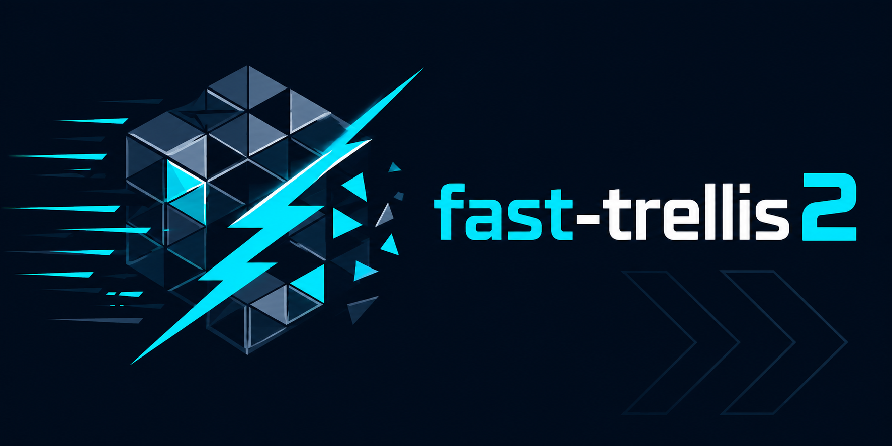
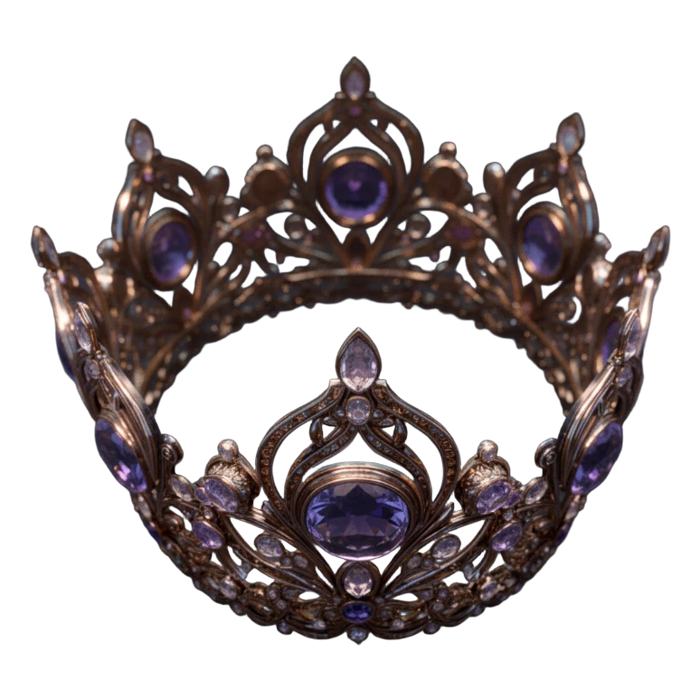

Training-free Fast-TRELLIS acceleration ported to TRELLIS.2
Fast-TRELLIS's training-free acceleration, faithfully ported onto TRELLIS.2. It wires cross-step caching into the three flow-matching stages (sparse structure + shape SLaT + texture SLaT); this repo is the frozen TaylorSeer baseline — the v2 reference point, not a HiCache variant.
git clone --recursive https://github.com/Archerkattri/fast-trellis2 cd fast-trellis2 bash setup.sh --new-env --basic --flash-attn --o-voxel --flexgemm --nvdiffrast --nvdiffrec
01
Evidence
| End-to-end speedup | 1.89× — 6.23 s vs 11.75 s unaccelerated base (1024_cascade, mesh + texture) |
|---|---|
| Geometry F1@0.05 (mean) | 0.900 vs 0.860 base — higher is better |
| Geometry F1 (median) | 0.959 vs 0.932 base |
| Chamfer distance | 0.048 vs 0.057 base — lower is better |
| Benchmark setup | 40 Toys4K objects, RTX 5090, seed 42; means over the 35 objects every config completed |
| Baseline lock tests | 4 CPU tests pin cache schedule, init defaults, order-1 exactness, forecast determinism (CI on every push) |
02
Media



03
Install & verify
python tests/test_taylor_baseline.py
# expect: 4 [PASS] lines — schedule, defaults, order-1 exactness, determinism (CPU only, no GPU)
04
Limits
What this release does not claim (from the release notes):
- Release v0.1.1: "No method changes."
- Release v0.1.1: "CI runs the lock tests on every push (torch CPU only; no hicache-pp by design — this repo is the frozen control)."
- README: "The following card is retained as prior-run evidence from the stated benchmark setup. It is not a current acceptance result. Re-run on the target GPU before making a new claim."
- README: "The mean is deflated by a few rotationally-symmetric objects (ball, bowl…) Go-ICP cannot orient uniquely, hence the per-object median alongside."
05
Family
| Base model | TRELLIS.2, accelerated by the hicache-plus-plus forecast core |
|---|---|
| Same base | hermit-trellis2 · hermit-trellis2-plus-plus |
| All 13 adapters | TRELLIS: faster-trellis, faster-trellis-plus-plus · TRELLIS.2: fast-trellis2, hermit-trellis2, hermit-trellis2-plus-plus · Hunyuan3D-2: hunyuan2-plus, hunyuan2-plus-plus · Hunyuan3D-2.1: hunyuan2.1-plus, hunyuan2.1-plus-plus · SAM: sam3d-plus, sam3d-plus-plus, fastsam3d-plus, fastsam3d-plus-plus |